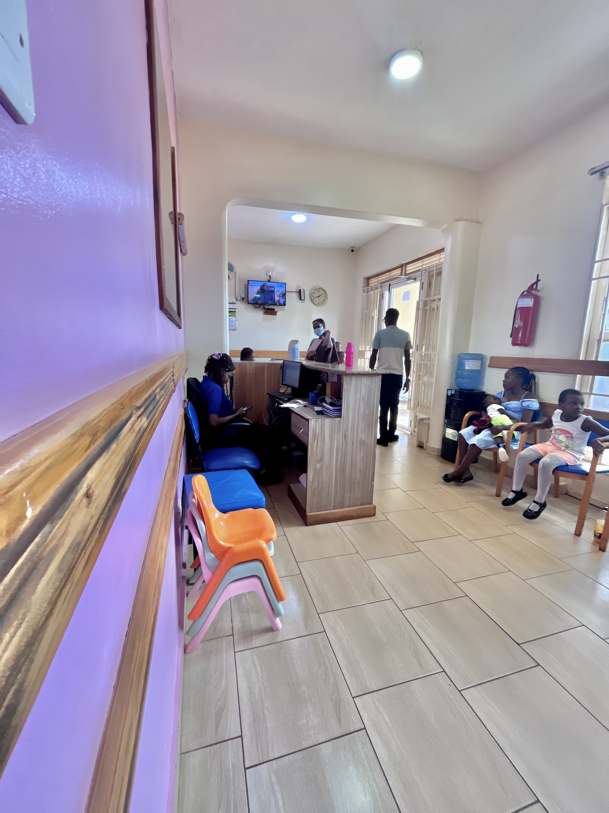
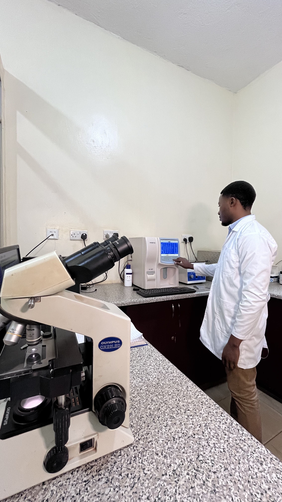
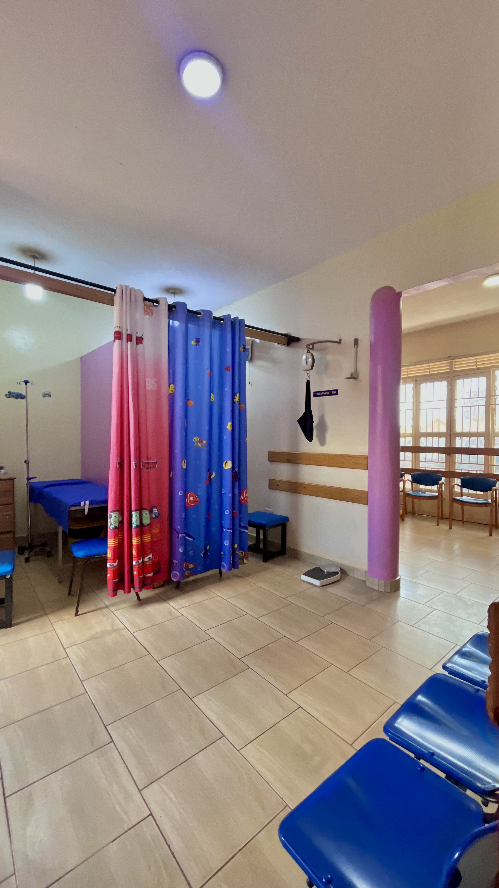
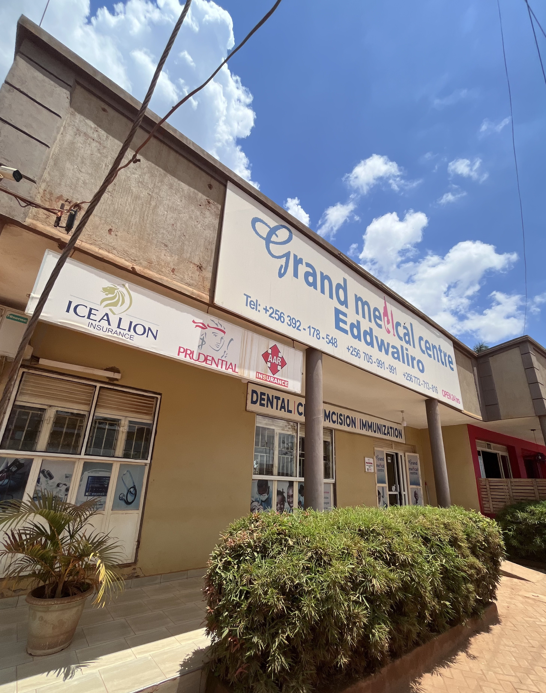

Work in a clean, patient-first environment with room to grow.
Grand Medical Centre is positioned around professionalism, ethics, teamwork, and accessible care.
Careers At Grand Medical Centre
We are building a team of clinical, laboratory, pharmacy, and operations professionals who care deeply about patient experience and quality service in Kira and the surrounding region.

Grand Medical Centre is positioned around professionalism, ethics, teamwork, and accessible care.
Why Work Here

Work in an environment shaped by professionalism, integrity, teamwork, and patient confidentiality.

Contribute across clinical care, laboratory support, pharmacy access, admissions, and patient services.

Help deliver affordable, accessible, and timely healthcare to patients in Kira and nearby areas.
Current Openings
Support patient care, triage, admissions, and treatment coordination across the facility.
Assist with testing workflows, reporting support, and quality handling of patient samples.
Support medication dispensing, patient guidance, stock coordination, and daily pharmacy service.
Handle reception flow, patient communication, appointment routing, and daily service coordination.
How We Hire
Apply Today
Send your application with your CV, role of interest, and a short introduction. We are especially interested in candidates who value teamwork, professionalism, and patient care.
Use the hospital's main communication channels or walk in at the Kira Trading Centre location to inquire about openings.
Kira Trading Centre opposite Kira Playground, along Bulindo Road just before Kira Health Centre.